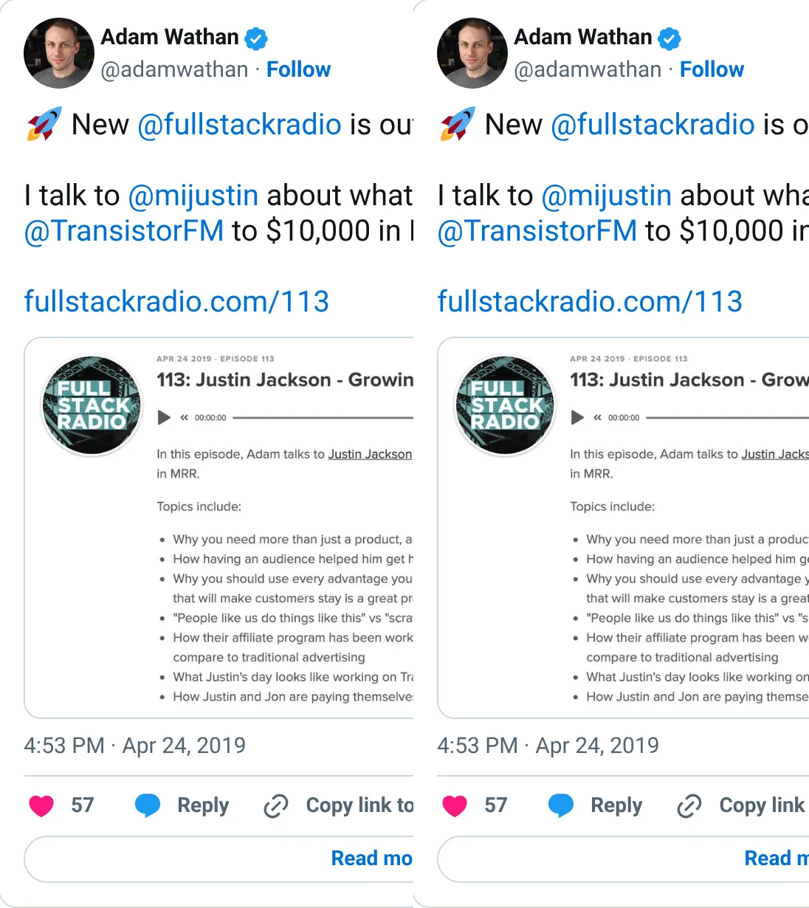
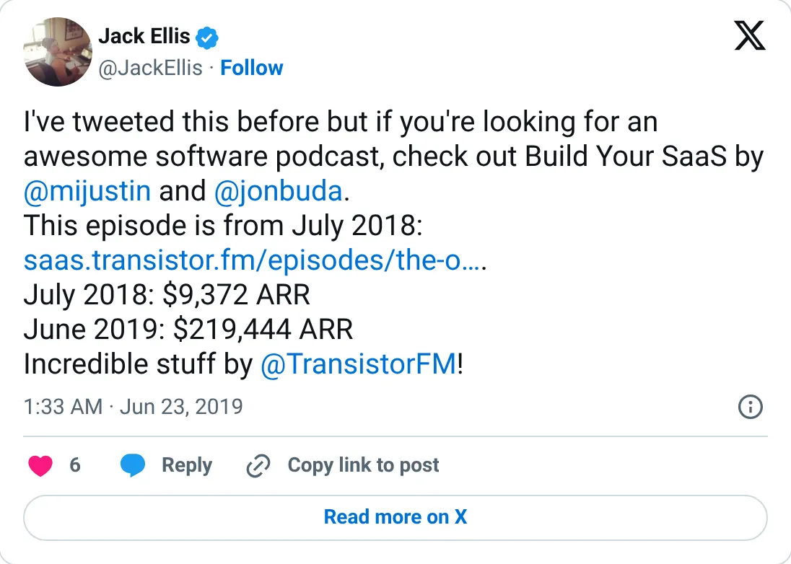

Not a pick
Transistor.fm
A real-looking company with a headline you should not plan against.
~$50K MRR (2020) · "millions in ARR" (2021)
Should you build this
The company may be real. The figure on the card is a peak, a stale year, a cash month, or an average. Transistor's early numbers are the detailed kind: $9,372 ARR, a first month around $1,400 with 46 customers, $10K MRR, $219,444 ARR. Then the trail goes soft. About $50K MRR sometime in 2020, “millions in ARR” in 2021, and a third-party 2025 guess around $4.5M ARR that the report itself calls unconfirmed. The founders stopped sharing exact numbers. The company is real. The figure on the card is a six-year-old approximation wearing a current rank.
Cited from the captured posts, shown below: the earliest captured post (Apr 24, 2019) is the source for “$10K MRR (Full Stack Radio)”; the latest milestone (Jun 23, 2019): This post is cited for more than one point in the trail: $9,372 ARR (per @JackEllis); $219,444 ARR (per @JackEllis).
Posts this is based on

$10K MRR (Full Stack Radio)
Open on X

This post is cited for more than one point in the trail: $9,372 ARR (per @JackEllis); $219,444 ARR (per @JackEllis)
Open on X
What the product is
Podcast hosting and analytics for businesses and creators. Profitable every year and bootstrapped with a team of 6.
⚠ Older: the founders stopped sharing exact numbers. A third-party 2025 estimate (~$4.5M ARR) is unconfirmed.